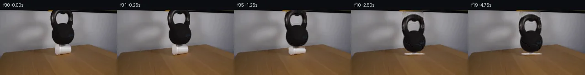
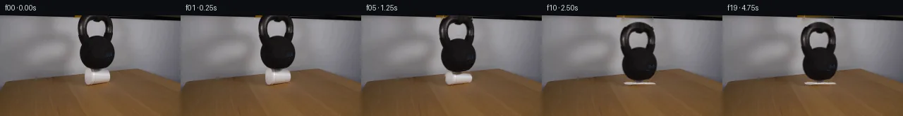
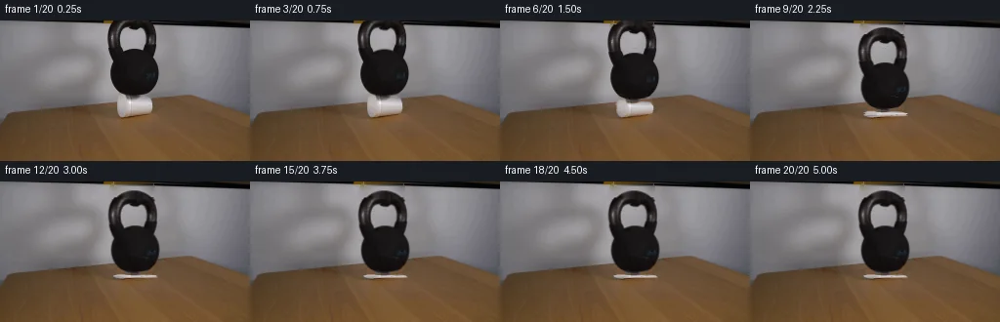
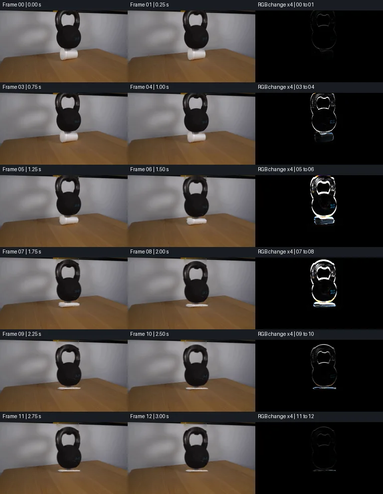

V0 · 初版
2026-11-05T19:53:27.368427+00:00 · RGB ffe7ffd325f3
![]()
Observable Generation Trace
把最终像素视频、Harness 冻结的每轮候选、真实工具事件和 Agent 自述放在同一页。可观测证据与模型自述分开标记，避免把“模型说它检查过”误当成真实工具调用。
![首帧]()
Static locked-off single-shot with fixed frame throughout filmed with constant framerate in real-time. The scene shows a realistic scientific demonstration. The scene only contains the described setup and actions. The white styrofoam cup is on a wooden table. The 30lb kettlebell is placed on top of the white styrofoam cup.
首帧显示在左侧播放器初始画面。Track 权限、隔离和 tensor 一致性来自 run manifest，而不是 METHOD.md。
默认勾选初版和最终版；可选其他版本一起同步播放。仅检查图更新的连续重复快照已合并，回退旧视频仍保留为一次修订。
Observable events
来源：events.jsonl + run manifest
此 Track 禁止读取输出图片。逐轮预览由外部 Harness 自动冻结，只用于事后审计，生成 Agent 当时看不到这些页面。
Frozen candidates
每张图来自该 round 的真实 00 / 01 / 05 / 10 / 19 帧

pixels e24a1c7b597803ac · code b36b3276fd49b055
--- previous/generate.py
+++ current/generate.py
@@ -0,0 +1,268 @@
+"""Deterministic source-pixel animation of a kettlebell compressing a foam cup.
+Only first_frame.png and prompt.txt provide scene information.
+"""
+from pathlib import Path
+import json
+import numpy as np
+from PIL import Image, ImageDraw
+from scipy.ndimage import map_coordinates, binary_dilation, binary_erosion, gaussian_filter, distance_transform_edt
+from scipy.sparse import lil_matrix
+from scipy.sparse.linalg import spsolve
+from artifact_io import save
+
+ROOT = Path(__file__).resolve().parent
+SRC = np.asarray(Image.open(ROOT / 'first_frame.png').convert('RGB'), dtype=np.float64)
+H, W = SRC.shape[:2]
+Y, X = np.mgrid[:H, :W]
+L = SRC.mean(axis=2)
+
+
+def polygon(points, scale=4):
+ im = Image.new('L', (W * scale, H * scale))
+ ImageDraw.Draw(im).polygon([(round(x * scale), round(y * scale)) for x, y in points], fill=255)
+ return np.asarray(im.resize((W, H), Image.Resampling.LANCZOS), dtype=float) / 255
+
+
+# Matte from measured silhouette and RGB contrast, including the handle opening.
+outer = polygon([(117, 0), (156, 0), (159.5, 11), (160, 24), (159, 32),
+ (157.5, 38), (162, 48), (163, 56), (160, 65),
+ (154, 72), (148, 76), (142, 79), (130, 79.5),
+ (124, 76), (119, 72), (115, 66), (112.5, 56),
+ (113.5, 48), (115, 43), (114, 39), (110, 28),
+ (109, 19), (110, 11), (113, 4)])
+core = (L < 100) & (outer > .15)
+core[:5] = (outer[:5] > .55)
+# Use a one-pixel contrast fringe without making polished highlights transparent.
+near = binary_dilation(core, iterations=1)
+contrast = np.clip((155 - L) / 95, 0, 1)
+ka = np.where(core, 1.0, np.where(near, contrast, 0.0)) * outer
+ka[(Y >= 8) & (Y <= 29) & (L > 148)] = 0
+ka = np.clip(ka, 0, 1)
+
+# The cup has a tilted upper contour and an oblique lower contour.
+ca = polygon([(119.5, 79), (121.5, 76.5), (127.5, 77), (132, 80),
+ (139, 80.5), (144, 78.5), (153.5, 79.5), (155.5, 82),
+ (156.3, 88), (155.5, 92), (153, 94.3), (147.5, 96),
+ (139, 97.7), (130, 98.6), (123, 99), (120, 95),
+ (119, 89), (118.8, 83)])
+ca *= 1 - ka
+# Source sidewall has an antialiased narrow vertical edge.
+ca[(X < 119) & (Y > 84)] = 0
+
+
+def harmonic_background(image, unknown):
+ """Discrete Laplace fill, with all neighboring source pixels as constraints."""
+ coords = np.argwhere(unknown)
+ ids = np.full((H, W), -1, dtype=int)
+ ids[unknown] = np.arange(len(coords))
+ mat = lil_matrix((len(coords), len(coords)), dtype=float)
+ rhs = np.zeros((len(coords), 3))
+ for i, (y, x) in enumerate(coords):
+ n = 0
+ for dy, dx in ((-1, 0), (1, 0), (0, -1), (0, 1)):
+ yy, xx = y + dy, x + dx
+ if 0 <= yy < H and 0 <= xx < W:
+ n += 1
+ j = ids[yy, xx]
+ if j >= 0:
+ mat[i, j] = -1
+ else:
+ rhs[i] += image[yy, xx]
+ mat[i, i] = n
+ result = image.copy()
+ result[unknown] = spsolve(mat.tocsr(), rhs)
+ return result
+
+
+unknown = binary_dilation((ka > .015) | (ca > .015), iterations=1)
+B = harmonic_background(SRC, unknown)
+# Preserve the original dark diagonal top background strip behind the handle.
+for y in range(5):
+ row = np.arange(117, 157)
+ a = SRC[y, 108:112].mean(0)
+ b = SRC[y, 161:165].mean(0)
+ B[y, row] = a[None] * (1 - (row - 108)[:, None] / 56) + b[None] * ((row - 108)[:, None] / 56)
+
+# Reconstruct the hidden straight segment of the table's perspective rear edge.
+# Wood grain is copied from the same frame, twenty rows farther into the table.
… diff truncated; 181 more lines …
pixels f365d78c65303a23 · code 2d5eac4efc578137
--- previous/generate.py
+++ current/generate.py
@@ -107,8 +107,8 @@
return np.where(a > .003, (SRC - backdrop * (1-a)) / np.maximum(a, .003), 0)
-# Exact source-layer reconstruction at zero displacement; a residual correction
-# below also retains tiny matte fringe and reconstruction discrepancies.
+# Exact source-layer reconstruction at zero displacement. The native-grid
+# residual is numerical roundoff, rather than an image-space edge correction.
cf = unmix(ca, B)
cup_at_zero = B * (1 - ca[..., None]) + cf * ca[..., None]
kf = unmix(ka, cup_at_zero)
@@ -135,8 +135,10 @@
extf[j, x] = np.clip(.65*sampled + .35*np.array([28, 24, 24]) + texture, 12, 73)
-# Work at four subpixels per output pixel for smooth silhouettes and folds.
-S = 4
+# The source-derived matte was rasterized at 4x resolution above.
+# Native-grid bilinear transport retains the input texture without leaving
+# a stationary residual of the original silhouette.
+S = 1
HY, HX = np.mgrid[:H*S, :W*S]
XX = (HX+.5)/S-.5
YY = (HY+.5)/S-.5
@@ -171,9 +173,13 @@
center = 136.8 + .75 * p * np.sin(np.pi*u) + .25*p
sx = 136.8 + (XX-center)/bow
sx += 1.2 * p**1.3 * fold * np.sin(np.pi*u)
- c_a = sample(ca, sy, sx)
- # Premultiplied sampling prevents hidden matte colors from bleeding.
- c_pre = sample(cf * ca[..., None], sy, sx)
+ blur_y = max(0.0, .45 * (1 / scale_y - 1))
+ filtered_alpha = gaussian_filter(ca, sigma=(blur_y, 0))
+ filtered_pre = gaussian_filter(cf * ca[..., None], sigma=(blur_y, 0, 0))
+ c_a = sample(filtered_alpha, sy, sx)
+ # Premultiplied sampling and vertical prefiltering prevent fringe bleed
+ # and texture aliasing as the tall cup becomes a thin folded band.
+ c_pre = sample(filtered_pre, sy, sx)
# Fold ridges and recessed creases are attached to cup material coordinates.
wave = 4.8*np.pi*u + (sx-136)*.052
crease = np.exp(-(np.sin(wave)/.24)**2)
@@ -205,15 +211,15 @@
region = binary_dilation((ka>.001)|(ca>.001), iterations=2)
region |= ((X>=107)&(X<=168)&(Y>=0)&(Y<=101))
region |= ((X>=103)&(X<=176)&(Y>=91)&(Y<=109))
- # First fractions of a pixel use a source-registered delta. The background
- # must be revealed in proportion to actual motion, not a global cut.
+ # Native-grid zero rendering reproduces the source exactly; apply its
+ # negligible numerical residual while preserving untouched pixels.
origin = zero_render
result = SRC + (down-origin)
result[~region] = SRC[~region]
return np.clip(np.rint(result),0,255).astype(np.uint8)
-# Reference render including supersampling, computed identically to moving frames.
+# Reference native-grid rendering at zero displacement.
def baseline():
c_a = sample(ca, YY, XX)
c_pre = sample(cf*ca[...,None], YY, XX)pixels f365d78c65303a23 · code 2d5eac4efc578137
No generate.py text change in this frozen round.
pixels f365d78c65303a23 · code bd286a4e0490af1a
--- previous/generate.py
+++ current/generate.py
@@ -3,6 +3,7 @@
"""
from pathlib import Path
import json
+import shutil
import numpy as np
from PIL import Image, ImageDraw
from scipy.ndimage import map_coordinates, binary_dilation, binary_erosion, gaussian_filter, distance_transform_edt
@@ -233,6 +234,8 @@
zero_render = baseline()
frames = np.stack([SRC.astype(np.uint8)] + [render(float(d)) for d in displacements[1:]])
save(frames, ROOT)
+# Preserve both the decoded RGB and the exact original PNG bytes at frame 00.
+shutil.copyfile(ROOT/'first_frame.png', ROOT/'frames'/'00.png')
# A transition sheet: successive states paired with 4x absolute RGB differences.
sheet = Image.new('RGB', (768, 165*6), (25,28,35))pixels f365d78c65303a23 · code 4fb2f7c0a78cf02c
--- previous/generate.py
+++ current/generate.py
@@ -3,10 +3,12 @@
"""
from pathlib import Path
import json
+import base64
+import re
import shutil
import numpy as np
from PIL import Image, ImageDraw
-from scipy.ndimage import map_coordinates, binary_dilation, binary_erosion, gaussian_filter, distance_transform_edt
+from scipy.ndimage import map_coordinates, binary_dilation, gaussian_filter
from scipy.sparse import lil_matrix
from scipy.sparse.linalg import spsolve
from artifact_io import save
@@ -153,9 +155,6 @@
B_hi = sample(B, YY.clip(0,H-1), XX.clip(0,W-1))
R_hi = sample(residual, YY.clip(0,H-1), XX.clip(0,W-1))
-ka_hi = sample(ka, YY, XX)
-ca_hi = sample(ca, YY, XX)
-initial_alpha = np.maximum(ka_hi, ca_hi)
displacements = np.array([0, .16, .48, 1.02, 2.05, 4.15, 7.3, 11.0, 14.1,
15.9, 16.48, 16.28, 16.40, 16.4, 16.4, 16.4,
@@ -269,9 +268,29 @@
'mean_absolute_rgb_change':float(delta.mean()),
'changed_pixels':int(changed.sum()),
'change_bbox':None if not len(xx) else [int(xx.min()),int(yy.min()),int(xx.max()),int(yy.max())]})
+# Independently decode the standalone player's little-endian RGB delta packets.
+html = (ROOT/'index.html').read_text()
+player_data = json.loads(re.search(r'const DATA=(.*?);\n', html).group(1))
+decode = lambda value: np.frombuffer(base64.b64decode(value), dtype='<u4')
+player_frame = decode(player_data['first']).copy()
+assert np.array_equal(player_frame.reshape(H,W), packed[...,0])
+assert len(player_data['deltas']) == 19
+for t, packet in enumerate(player_data['deltas'], 1):
+ delta = decode(packet)
+ i = 0
+ while i < len(delta):
+ start, count = map(int, delta[i:i+2])
+ i += 2
+ player_frame[start:start+count] = delta[i:i+count]
+ i += count
+ assert np.array_equal(player_frame.reshape(H,W), packed[...,t]), t
+assert (ROOT/'frames'/'00.png').read_bytes() == (ROOT/'first_frame.png').read_bytes()
+assert np.array_equal(frames[12], frames[19])
+assert np.all(packed < 0x1000000)
report = {'frame_count':20,'shape':[20,144,256,3],'fps':4,'duration_seconds':5,
'first_frame_exact':True,'all_pngs_match_uint32_tensor':True,
'tensor_shape':list(packed.shape),'tensor_dtype':str(packed.dtype),
+ 'first_frame_png_bytes_exact':True,'html_player_matches_all_frames':True,
'visual_review':False,'transitions':validation}
(ROOT/'validation.json').write_text(json.dumps(report,indent=2)+'\n')
print(json.dumps(report,indent=2))Final visual checks
Harness 保存的最终产物


Agent claims
以下文字由生成 Agent 撰写，不等同于工具证据
The only scene inputs are prompt.txt and first_frame.png. The PNG was decoded with Pillow and examined with NumPy RGB averages, row runs, and character maps. No image Read/View tool was used. Coordinates below are in the 256 × 144 image, with the origin at the upper left.
Physical interpretation: the initial image is the moment the heavy weight contacts the cup. Under the continuing load, the foam first shortens slightly, then the thin cup wall buckles and folds. The kettlebell moves down as a rigid object, maintains contact, and comes to rest on a flattened cup. This is a qualitative pixel-scale compression model, not a finite-element simulation. A very small lateral shift accompanies asymmetric buckling; there is no large bounce or explosive debris.
| Frame | Time (s) | Event |
|---|---|---|
| 00 | 0.00 | Exact source PNG; initial contact. |
| 01 | 0.25 | Same setup; load settles by a fraction of a pixel. |
| 02 | 0.50 | About 0.5 px shortening; cup holds the initial load. |
| 03 | 0.75 | About 1 px shortening; first shallow wall crease. |
| 04 | 1.00 | About 2 px shortening; wall bows outward. |
| 05 | 1.25 | About 4 px shortening; asymmetric buckling begins. |
| 06 | 1.50 | About 7 px shortening; weight descends with the rim. |
| 07 | 1.75 | About 11 px shortening; wall folds stack beneath weight. |
| 08 | 2.00 | About 14 px shortening; folded cup spreads locally. |
| 09 | 2.25 | About 16 px shortening; weight reaches compressed foam. |
| 10 | 2.50 | About 16.5 px shortening; small damped settling. |
| 11 | 2.75 | About 16.3 px shortening; tiny elastic relaxation. |
| 12 | 3.00 | About 16.4 px shortening; rest position reached. |
| 13 | 3.25 | Flattened cup holds its permanent folds. |
| 14 | 3.50 | Stable weight on the flattened cup. |
| 15 | 3.75 | Stable weight on the flattened cup. |
| 16 | 4.00 | Stable weight on the flattened cup. |
| 17 | 4.25 | Stable weight on the flattened cup. |
| 18 | 4.50 | Stable weight on the flattened cup. |
| 19 | 4.75 | Final stationary arrangement. |
The artifact contains 20 frames, each displayed for 0.25 seconds, giving 5.00 seconds total. Validation will compare every PNG to the packed uint32 0xRRGGBB tensor and check frame 00 exactly against the source. Inspection sheets will be generated but reviewed only numerically.
This is a deterministic local pixel animation of the input scientific setup: the 30 lb kettlebell settles onto the foam cup, the cup wall buckles, and the weight rests on compressed foam. The camera, table, and surrounding scene are fixed.
The only scene inputs were first_frame.png and prompt.txt. Pillow decoded the PNG, and NumPy was used to inspect numeric RGB values, row boundaries, brightness runs, and text character maps. No image Read/View tools were used. The generated inspection sheets were checked through local pixel statistics, not visually reviewed. No network, references, masks from outside this workspace, external AI models, rendering engines, or subagents were used.
OBSERVATION.md was written before the animation implementation and contains the scene measurements and twenty-frame event plan.
artifact_io.py saves the PNG sequence, packed tensor, contact sheet, and standalone HTML player. generate.py also creates a transition sheet containing selected consecutive frame pairs and amplified absolute RGB changes.The displacement is a prescribed, accelerating load-and-buckling trajectory, followed by subpixel damped settling. The 30 lb weight (approximately 13.6 kg) motivates the qualitative crushing response. This is not a force-integrated rigid-body solver or a finite-element material simulation. It adds no hand, fragments, or other objects.
An initial four-subpixel full-frame transport left small stationary source-edge traces. The final version uses native-grid bilinear transport, while retaining supersampling for matte rasterization and using a separate vertical prefilter for the compressed cup. Numeric character maps and RGB probes confirmed that the original body outline clears as the body descends, and that a thin bright cup band remains underneath the final contact region.
pixels.npz contains the pixels array with shape (144, 256, 20) and dtype uint32. Each value is 0xRRGGBB; no alpha byte is used.validation.json.inspection.png is a 1024 × 330 contact sheet; transition_check.png is a 768 × 990 transition sheet. Neither is claimed to have received visual review.Reproduce the artifacts by running python generate.py inside this workspace. The implementation uses Python, NumPy, Pillow, and SciPy only.